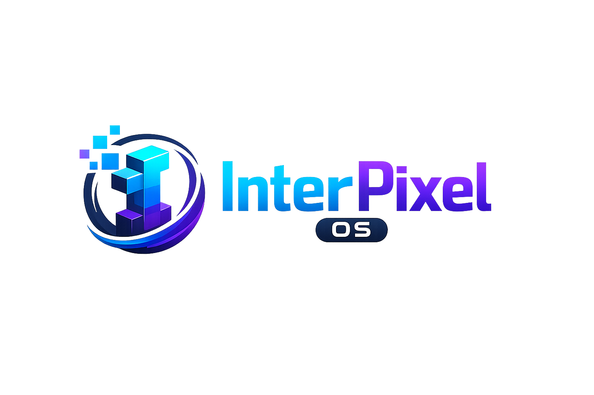

This is a web based OS for Windows, it was made for Teaching System and Schools
This OS was made by Aditya Singh who is a Full-stack Web Developer under his own solo startup named Chondria, he has done his Graduation from freeCodeCamp and cs50 computer-science course at the age of 12.

First go on Python official Website and install python 3.14.0, then in you cmd write 'python -m pip install --upgrade pip', and then click on the button given below to install InterPixel 1.0